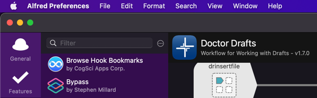

I’ve just double checked mine is still working okay and no external updates have broken it. It is, so I’m pretty confident it still comes down to something localised for you.
Can you do the following couple of things please?
1. Confirm the version of Doctor Drafts
Until I add this into the next thing, I think the easiest way to get this is by looking at the title of the workflow when you select it in Alfred’s preferences.

The latest release at the time of writing is version 1.7.0
2. Run drdiag
Run the drdiag Doctor Drafts flow via Alfred. This runs some diagnostics to determine you have everything set up correctly. Put the results (screenshot or copy & paste the text) into your reply - but DO NOT expand/include the Alfred PowerPack or Drafts Pro) subscription information. Those specific details are not relevant here and should not be publicly shared.
For example, here’s how my drdiag results look:
Curent Theory …
My initial guess is that it isn’t appending to random drafts as you noted in your first reply, but only what draft you have open last as you mention for your example case in the video and I think suggest in your original post. Based on that assumption, it leads me to suspect you may have skipped some of the Doctor Drafts set up instructions, or that something failed when you were following them.
The drlog flow has a block noted as “Match {query} in title and pass out UUID”. It runs a launcher shell script to run a Python script, which executes in the background and identifies what draft is the daily log using the command ./runpythonscript.sh match_title.py $argv.
Ref: You can view details, including the flow layout, for this on the Doctor Drafts web site - Flow: drlog.
I think the script may fail to run, pass back something, but not a UUID for today’s log draft, and the resulting append then defaults to the current/last viewed draft.
But, this is just a first guess based on very limited information and not being able to reproduce the issue. Hopefully, the answers to the questions above will help get a bit closer, and may even confirm my theory.
As a final point of note, in your video it appears you have added your custom dlog flow to the Doctor Drafts workflow. I would recommend against doing this, and instead putting it in a separate workflow. That way you won’t lose anything when you update (and I will continue to put out updates), you won’t accidentally override anything in the original workflow, etc.
I structure my own additional flows like this, and even the examples I use on the website. I do this for exactly these reasons.


{kind=link}